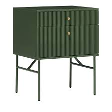
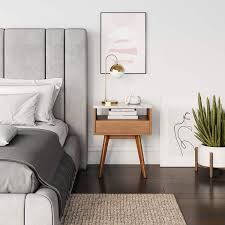

Bedside Tables, also known as nightstands, are small tables that are placed along one or both sides of a bed. Often designed with drawers and shelves for additional bedroom storage, bedside tables support a range of bedroom functions by holding items such as reading lamps, drinking glasses, books, phones and phone chargers, notebooks, candles, small potted plants, alarms clocks, and additional blankets. Bedside tables are designed and manufactured with a range of styles, heights, and materials that can be paired with bed frames and other bedroom furnishings.
 | product name | stock availability | price | Bedside table | We stock about 200 bedside table in different designers. | Our price start from R500 to R2000, depending on which Bedside table you are buying. |
|---|